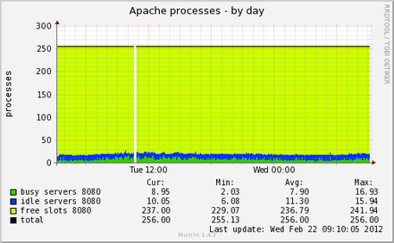
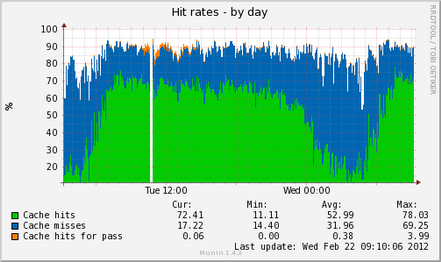
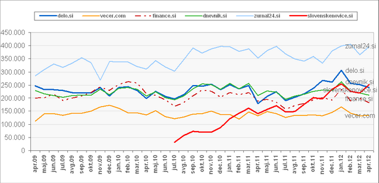

Slovenske Novice Dot Si(how did we do it and what did we learn)
Janez Urevc
(@slashrsm)
(janez@|http://)janezurevc.name
About me
- developer, freelancer
- currently working for biggest Slovenian daily newspaper (until end of Dec. 2012)
- high traffic media websites (for our standards :))
- from Portorož, Slovenia
- 2011 Google Summer of code student, 2012 mentor


drupalalpeadria.org
@dcalpeadria
Some info about company
- Delo, d.d. - the oldest and one of the biggest media companies in Slovenia
- Established ~50y ago, very print-centric culture
- 2 daily newspapers, >10 other editions
- realized in 2010 that need to go digital ;)
- internal CMS was used before, development not sustainable
- Free software, please HELP! :)
Why Free software
- community, no lock-in, possibility of professional support, other big projects out there
- Drupal is not the only free software we use: Linux, Apache, MySQL, Memcached, Varnish, Redis, ...
- What managers say:
"Millions of developers are working for us for free!" - What managers should say:
"We are cooperating with millions of developers on development of software X."
Some info about project
- Development started in May 2011
- We used Scrum methodology
- Team: 3-4 developers + 2x Scrum Master + 1x Product owner
- Drupal 7
- Code-driven development
- Features, update hooks
- installation profiles
- Automatic nightly code reviews
- Parallel project: "Delo's centralized user profile"
- OpenID single sign on
- attribute exchange
Main modules used
- Views
- Panels
- Media + File entity
- Search API: Solr integration
- Features
- Migrate
- Varnish integration
- Radioactivity
- Memcached, APC cache
- many, many more (big focus on improvements of editorial workflow)
Performance
- Current traffic: 250.000 unique users (IP), 13M hits
- Growth: 10-15% monthly
-
Varnish
- "issues" /w cookies - needed some custom configuration
- user's IP number
-
Cache
- Panels cache
- Views cache
- Backend: Memcached
- syncronization issues
- "semi smart" cache handling
- lazy loading of ads


